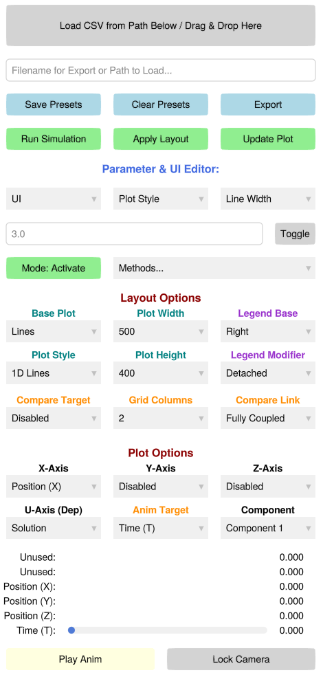

PDEStudio Control Panel Overview

The PDEStudio graphical interface is driven by a unified, reactive control panel. Rather than hiding settings in nested pop-up windows, the interface is designed as a single, vertically scrolling dashboard. It is divided into four primary functional regions.
1. File Operations & Execution
The top region handles data serialization and backend execution.
- I/O and Presets: The text box acts as a dual-purpose path resolver. You can type a filename here to Export high-res figures/animations, or drop a previously saved
.csvdirectly onto the top button to instantly recreate a past simulation state. You can also save or clear visual presets here. - Reactive Triggers: The green execution buttons (
Run Simulation,Apply Layout,Update Plot) are tied to a background state machine. If you change a parameter that requires a backend recalculation or a structural layout change, the corresponding button will turn yellow to indicate that the UI is out of sync with the backend.
2. Advanced Editors
This section allows for deep, granular control over the simulation parameters and active physics.
- Parameter & UI Editor: A hierarchical, three-tier dropdown system (Category → Scope → Parameter). It grants direct access to the backend dictionaries, allowing you to manually type and toggle specific line widths, solver tolerances, or UI labels without writing code.
- Method Controls: Allows you to dynamically activate or deactivate specific numerical solvers or analytical baselines from your
SimulationConfigon the fly.
3. Rendering Configuration
The red-titled sections dictate how your numerical tensors are projected onto the screen.
- Layout Options: Controls structural changes—like switching from 1D Lines to 3D Surfaces, adjusting legend placement, or setting up multi-column comparisons. Note: Changes here require you to click "Apply Layout" to rebuild the Makie grid.
- Plot Options: Defines the active spatial axes (X, Y, Z) and the dependent mathematical field (U-Axis). Changes made here trigger instant, tear-free data updates without rebuilding the plot window.
4. Exploration & Playback
The bottom region is dedicated to interacting with the active data.
- Dimensional Sliders: Dynamically generated sliders for every sweep parameter and physical dimension. These automatically scale to the global minimum and maximum of your active dataset, allowing you to smoothly slice through high-dimensional tensors.
- Camera & Animation: Features a one-click animation player that sweeps across your chosen
Anim Target. The Lock Camera button allows you to freeze the 3D azimuth and elevation, ensuring perfectly stable video exports.